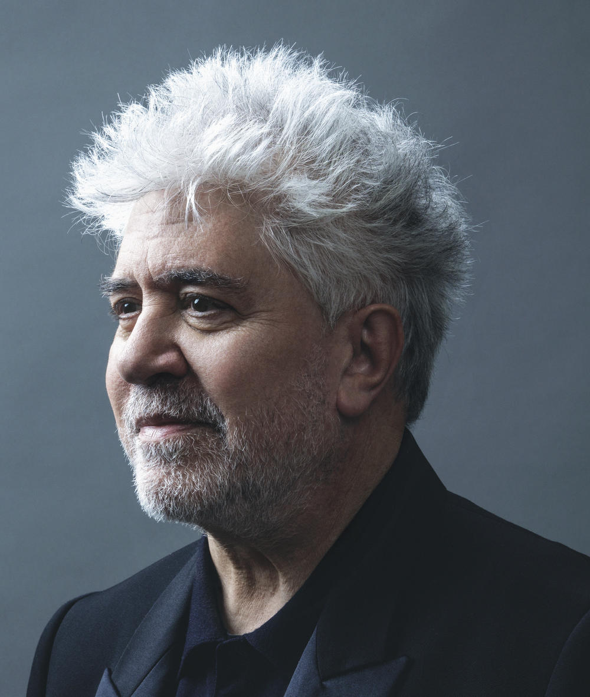

Alberto Iglesias
Alberto Iglesias Fernández-Berridi (né le 21 octobre 1955) est un compositeur espagnol. Il a d'abord été remarqué comme compositeur de partitions pour des films espagnols, principalement de Pedro Almodóvar et Julio Medem. Sa carrière est devenue plus internationale avec le temps et il a finalement commencé à travailler également à Hollywood.
 Alberto Iglesias au 32e Goya Awards en 2018 (63 ans).
Alberto Iglesias au 32e Goya Awards en 2018 (63 ans).
La Mauvaise Éducation
(La Mala Educación)
Pedro Almodóvar

Au début des années 1960, 2 jeunes garçons, Ignacio et Enrique, découvrent l'amour et les passions dans leur école religieuse. Le père Manolo, directeur de l'institution et professeur de littérature, est à a fois témoin et acteur de ces premières découvertes. Les chemins de ces 3 personnages, dont les vies sont profondément imbriquées, se croiseront à 2 autres reprises, à la fin des années 1970 puis vers 1980.
 Ici, le réalisatur espagnol Pedro Almodóvar en 2020 (71 ans).Puerta Final
(Bande Sonore Originale)
Alberto Iglesias
Cette musique a été composée et dirigée par Alberto Iglesias et joué par la « London session Orchestra » et le « Choeur Vivaldi-Ipsi- petits cantors de Catalunya ».